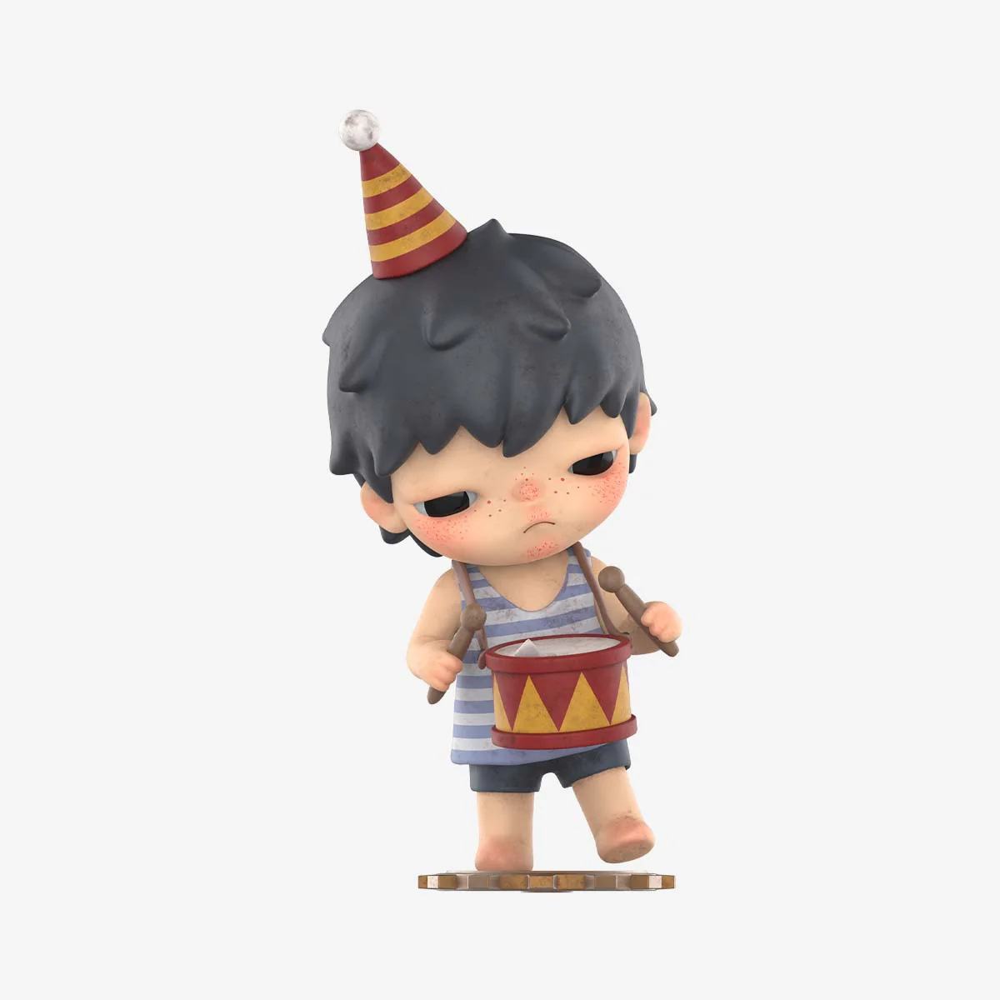
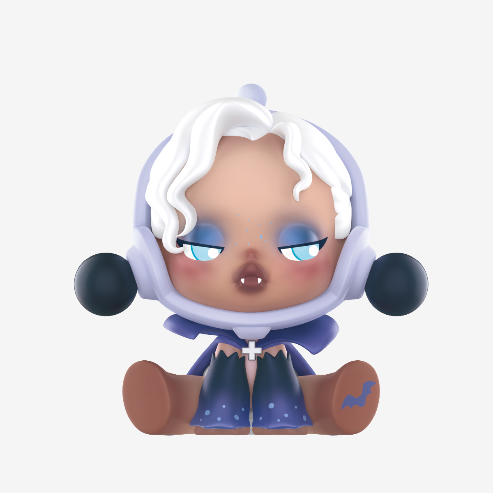
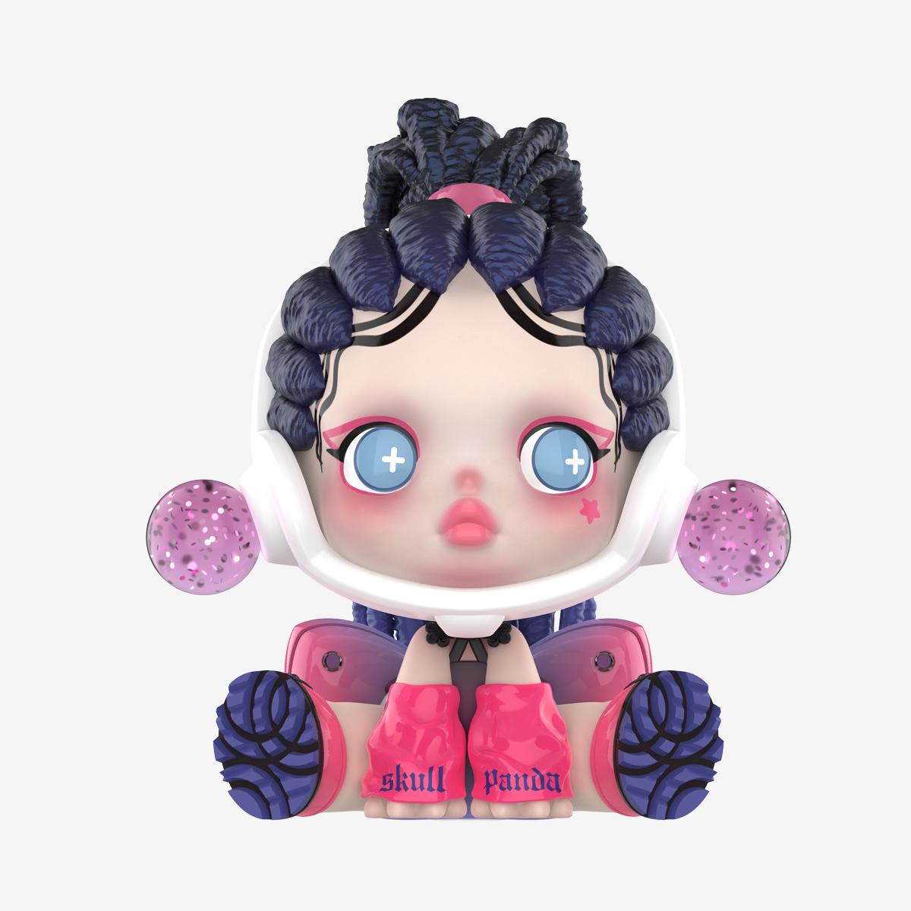

FEATURED
 CHARACTERS
Created by contemporary artist Lang, Hirono is a complex character. Through Hirono Lang aims to highlight the subtle fluctuations of life, its ups and downs, and attempts to freeze in time the elusive feelings that reveal our true character – love, joy, sadness, fear, kindness, cowardice and others. Hirono is the epitome of growth, and a personification of profound human emotions.
SKULLPANDA emerged as a distinctive kind of existence. As a universal symbiont, it travels freely between planets, looks for itself, plays different roles and experiences different lives. The first time you see SKULLPANDA, you are gripped by an inexplicable force. It dwells in the darkness of empty endless space, presenting itself as a wide openness, the kind that has no bounds.